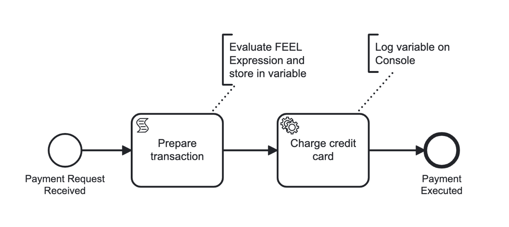

Getting started as a Java developer using Spring
In this guide, we'll step through using Spring Boot and the Spring Zeebe SDK with Desktop Modeler to interact with your local Self-Managed Camunda 8 installation.
This guide specifically uses Java and Spring because the two, in combination with Camunda 8, is our default technology stack recommendation. Learn more in the Java greenfield documentation.
By the end of this tutorial, you'll be able to use Spring and Java code with Zeebe to:
- Deploy a process model.
- Initiate a process instance.
- Handle a service task.
For example, in this guide we will outline a BPMN model to receive a payment request, prepare a transaction, charge a credit card, and execute a payment:

While stepping through this guide, you can visit our sample repository with the completed code to check your work.
This tutorial is not intended for production purposes.
Prerequisites
Before getting started, ensure you:
- Can access your preferred code editor or IDE.
- Have Java installed locally. Currently, the Spring Initializr supports Java versions 17, 21, and 22.
- Have Docker Desktop installed locally.
- Install Desktop Modeler.
Step 1: Install Camunda 8 Self-Managed
If you haven't already, follow this guide to install Camunda 8 Self-Managed locally via Docker Compose:
- Use the
docker-compose.yamlfile in this repository. - Clone this repo and run
docker compose up -din your terminal to start your environment.
For Camunda versions earlier than 8.6, the docker compose up -d command is only available to enterprise customers with access to Camunda's private registry. From version 8.6 onwards, docker compose up -d is available for all users, as Web Modeler images are publicly available.
To confirm Camunda 8 Self-Managed is installed, click into Docker Desktop. Here, you will see the camunda-platform container. Alternatively, navigate to the different components and log in with the username demo and password demo. For example, Operate can be accessed at http://localhost:8081 (as noted under Port(s) in the Docker container). Find additional guidance in the repository README.
Step 2: Create a new Spring Boot project
Next, create a new Spring Boot project:
- Go to https://start.spring.io/ to get started.
- Under Project, select Maven. Under Language, select Java. Under Spring Boot, select the latest non-SNAPSHOT version (currently 3.3.0).
- Under Project Metadata, configure the following:
- Group:
io.camunda.demo - Artifact:
process_payments - Name:
Process payments - Description:
Process payments with Camunda - Package name:
io.camunda.demo.process_payments - Packaging:
Jar - Java: Select the Java version you have installed.
- For this tutorial, we will not install any dependencies.
- Group:
- Click Generate.
- Download the project, extract the
.zipfile, and add the contents to your desired location. - Open this project in your preferred code editor.
- Run
mvn spring-boot:runin your terminal to confirm your Spring project builds. - (Optional) Run
git initif you'd like to commit milestones along the way, and add a.gitignorefile containingtarget/to ignore build artifacts.
Step 3: Create a new BPMN diagram
Next, we'll create a BPMN diagram to represent the transaction model shown at the beginning of this guide:
- Open Desktop Modeler.
- Click Create a new diagram in Camunda 8, and name your diagram
Process paymentswith an id ofprocess-payments. - Add a start event, and name it
Payment request received. - Append a task named
Prepare transaction. - Click the wrench-shaped change type context menu icon to change the type of task to a script task, and configure the following properties:
- Implementation:
FEEL expression - Script/Result variable:
totalWithTax - Script/FEEL expression:
total * 1.1(this represents the tax applied to the transaction.)
- Implementation:
- Append a task named
Charge credit card. - Click on the task and click the wrench-shaped icon to change the type of task to a service task. In the properties panel, change the Task definition/Type to
charge-credit-card. - Append an end event named
Payment executed. - Save this BPMN file to your Spring project in
src/main/resources, and name itprocess-payments.bpmn.
Step 4: Deploy your process
To deploy your process, take the following steps:
- Open Desktop Modeler and click the rocket icon in the bottom left corner.
- Change the Deployment name to
process-payments, and ensure the Target isCamunda 8 Self-Managed. - Change the Cluster endpoint to
http://localhost:26500/, with no authentication. - Click Deploy.
When you open Operate at http://localhost:8081/, you should now note the process deployed to your local Self-Managed setup.
Step 5: Run your process from Modeler
To run your process, take the following steps:
- From Desktop Modeler, click the "play" icon (next to the rocket icon to deploy) in the bottom left corner.
- In Variables, insert the JSON object
{"total": 100}. - Click Start.
From Operate, you should now notice a process instance running. You'll notice the process instance is waiting at Charge credit card, because we'll need to configure a job worker.
Step 6: Implement a service task
To implement a service task, take the following steps:
Configure Spring Boot Starter
Add the following Maven dependency to your Spring Boot Starter project, replacing x with the latest patch level available:
<dependency>
<groupId>io.camunda</groupId>
<artifactId>spring-boot-starter-camunda-sdk</artifactId>
<version>8.5.x</version>
</dependency>
Configure the Zeebe client
Open your src/main/resources/application.properties file, and paste the following snippet to connect to the Self-Managed Zeebe broker:
zeebe.client.broker.grpcAddress=http://127.0.0.1:26500
zeebe.client.broker.restAddress=http://127.0.0.1:8080
zeebe.client.security.plaintext=true
Ensure you provide grpcAddress and restAddress in absolute URI format: scheme://host(:port).
Create a worker
- In
src/main/java/io/camunda/demo/process_payments/, create a file calledChargeCreditCardWorker.java. - In the file created above, paste the following dependencies and package
package io.camunda.demo.process_payments:
package io.camunda.demo.process_payments;
import java.util.Map;
import org.slf4j.Logger;
import org.slf4j.LoggerFactory;
import org.springframework.stereotype.Component;
import io.camunda.zeebe.spring.client.annotation.JobWorker;
import io.camunda.zeebe.spring.client.annotation.Variable;
- Next, we can add a
ChargeCreditCardWorkerclass decorated with@Componentand instantiate a logger. Additionally, we will add achargeCreditCardmethod and decorate it with@JobWorker, specifying the type of service tasks it will handle. The method takes a@Variable(name = "totalWithTax") Double totalWithTaxargument to indicate which variables it needs from the task. The implementation of the method will log thetotalWithTax, and return a map, to indicate to Zeebe that the task has been handled:
@Component
public class ChargeCreditCardWorker {
private final static Logger LOG = LoggerFactory.getLogger(ChargeCreditCardWorker.class);
@JobWorker(type = "charge-credit-card")
public Map<String, Double> chargeCreditCard(@Variable(name = "totalWithTax") Double totalWithTax) {
LOG.info("charging credit card: {}", totalWithTax);
return Map.of("amountCharged", totalWithTax);
}
}
To check your work, visit our sample repository with the completed code.
In your terminal, run mvn spring-boot:run, where you should see the charging credit card output. In Operate, refresh if needed, and note the payment has executed.
Step 7: Start a process instance
To start a process instance programmatically, take the following steps:
- In
ProcessPaymentsApplication.java, add the following dependencies after the package definition:
package io.camunda.demo.process_payments;
import java.util.Map;
import org.slf4j.Logger;
import org.slf4j.LoggerFactory;
import org.springframework.beans.factory.annotation.Autowired;
import org.springframework.boot.CommandLineRunner;
import org.springframework.boot.SpringApplication;
import org.springframework.boot.autoconfigure.SpringBootApplication;
import io.camunda.zeebe.client.ZeebeClient;
import io.camunda.zeebe.spring.client.annotation.Deployment;
- Convert the application to a
CommandLineRunner, by addingimplements CommandLineRunnerto theProcessPaymentsApplicationclass declaration. Instantiate a staticLoggervariable, and an instance variable namedzeebeClientwith the@Autowiredannotation.
@SpringBootApplication
public class ProcessPaymentsApplication implements CommandLineRunner {
private static final Logger LOG = LoggerFactory.getLogger(ProcessPaymentsApplication.class);
@Autowired
private ZeebeClient zeebeClient;
public static void main(String[] args) {
SpringApplication.run(ProcessPaymentsApplication.class, args);
}
}
- Implement an overriding
runmethod inProcessPaymentsApplication. When the application runs, it will create a newprocess-paymentsprocess instance, of the latest version, with specified variables, and send it to our local Self-Managed instance:
@Override
public void run(final String... args) {
var bpmnProcessId = "process-payments";
var event = zeebeClient.newCreateInstanceCommand()
.bpmnProcessId(bpmnProcessId)
.latestVersion()
.variables(Map.of("total", 100))
.send()
.join();
LOG.info("started a process instance: {}", event.getProcessInstanceKey());
}
To check your work, visit our sample repository with the completed code.
Re-run the application in your terminal with mvn spring-boot:run to see the process run, and note the instance history in Operate.
Step 8: Deploy the process
To deploy your process, take the following steps:
- Decorate the
ProcessPaymentsApplicationclass with@Deployment(resources = "classpath:process-payments.bpmn")inProcessPaymentsApplication.java:
@SpringBootApplication
@Deployment(resources = "classpath:process-payments.bpmn")
- In Desktop Modeler, change the tax amount calculated to
total * 1.2under FEEL expression and save your changes.
Re-run the application in your terminal with mvn spring-boot:run to see the process run. In Operate, note the new version 2 when filtering process instances, and the tax amount has increased for the most recent process instance.